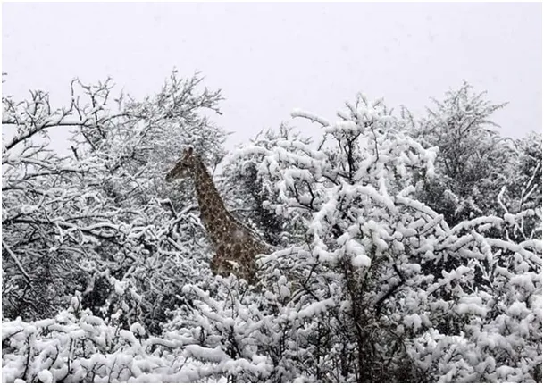
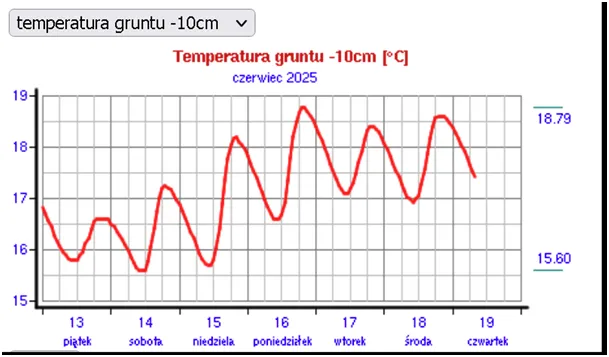
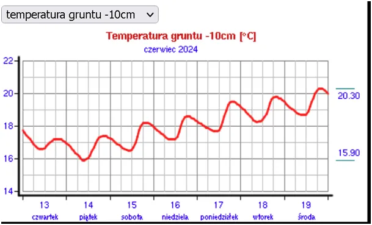
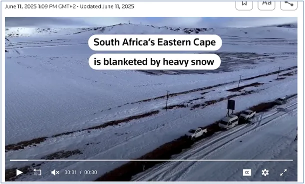
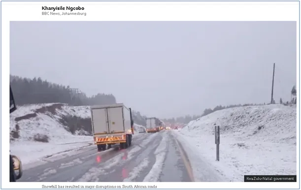
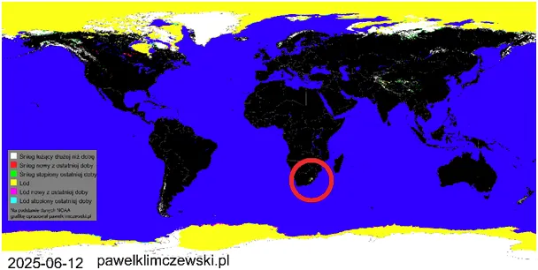

Afryka ogłasza początek sezonu odśnieżania.
Zbliżamy się do letniego przesilenia, niestety zimne maj i początek czerwca powodują, że to, co decyduje o pogodzie, czyli temperatura gruntu jest o 2 st. C niższa niż to zwykle bywa o tej porze roku. Chłodne wiatry z północy i zachmurzenie w dzień powodują, że ziemia wychładza się nocą i nie może w dzień zakumulować tyle ciepła, aby poranki nie były rześkie.


Przed wschodem słońca w wielu miejscach temperatura spada prawie do 10 st. C co nie jest typowe dla lata. Długi weekend z dnia na dzień będzie coraz cieplejszy, ale szybko upalne powietrze zostanie wypchnięte na wschód przez fronty deszczowe. "Janowa woda" to typowe dla naszego klimatu opady, które zasilają wegetację roślin w szczytowym okresie w roku. Jak pokazuje wykres ostatni, sytuacja nie jest lokalna. Proces topnienia śniegów w całej Arktyce jest bardzo opóźniony i spowalnia im bliżej lata.


Tymczasem na półkuli południowej już na dwa tygodnie przed początkiem tamtejszej zimy w górach południowej Afryki spadł śnieg i leżał przez kilka dni na terenie znacznie większym niż to czasem bywało w latach ubiegłych, ale dopiero w lipcu. Jak podaje Reuters: wiele dróg jest tam nieprzejezdnych z powodu zasp. To nie są pobielone wysokie szczyty, to głęboki śnieg w dolinach w okolicy Johannesburga. Zdjęcia żyraf na śniegu były dotąd rzadkością, ale wygląda na to, że staną się czymś powszechnym.

Zatem od bieguna północnego do południowego mamy namacalne symptomy wchodzenia Ziemi w okres chłodniejszy, co jest oczywiste, gdy przeanalizujemy cykle słoneczne w ostatnich kilku wiekach. Pełna analiza tego zjawiska z prognozą na kilka dekad jest tu: https://pawelklimczewski.pl/2024/02/03/kosmiczna-prognoza-do-2045-globalne-oziebienie/
Paweł Klimczewski